是專為素食者
打造的營養管理平台
你的 營養素值
交給我們來算
我們根據個人健康數據與素食飲食需求，
計算出每日所需營養素，透過專業分析提供你完整報告
ABOUT
US
JASO+ 音讀作台語發音"呷素"來自一群對「純淨健康」的堅持
與素食生活熱愛的人。
我們專注於提供優質、天然、純素的保健食品，為每一位重視
身心健康、尊重生命的你打造更安心的選擇。
我們相信健康應該是 純粹而簡單的。不添加動物成分、不使用
不必要的化學添加物，每一樣產品都經過嚴格把關，只為讓你
補充營養的同時，也能安心守護地球與生命。

VIEW ABOUT US
素於你需要的，不需要的就別多吃
王昱程 營養師
｜證照｜國家專技高考營養師
腎臟專科營養師
糖尿病衛教師
CTSSN 運動營養認證
長照LEVEL I
認證HACCP 初級及進階認證
陳小莉 營養師
｜證照｜國家專技高考營養師
腎臟專科營養師
糖尿病衛教師
CTSSN 運動營養認證
長照LEVEL I
認證HACCP 初級及進階認證
自從吃素後感覺體力變差，運動完還一直肌肉痠痛？

素食知識
素食者如何補充B12？
B12 是素食者最容易缺乏的營養素之一...
蛋白質要怎麼吃才夠？
植物性蛋白質可以從豆類、堅果取得...